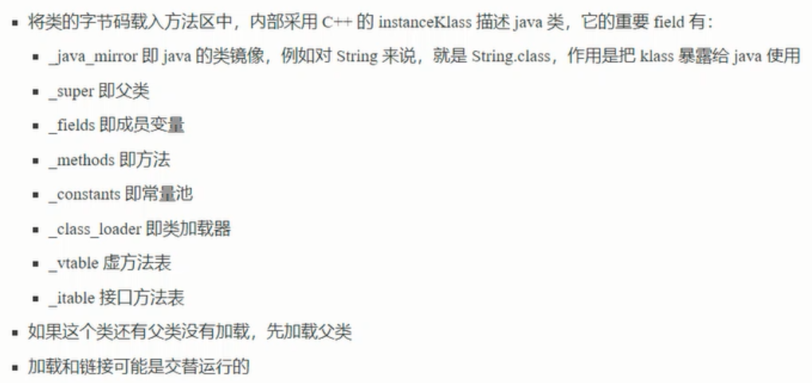

4、类加载阶段
4、1 加载


4、2 链接
链接阶段第一步：验证，验证类是否符合JVM规范，安全性检查

链接阶段第二步：准备，为static变量分配空间，设置默认值

static final String d="hello";//是在准备阶段就赋值完成的
链接阶段第三步：解析，将常量池中的符号引用解析为直接引用

ClassLoader 中的loadClass并不会导致类的解析和初始化，只是类加载。
new() 会导致类的加载，解析和初始化。
4、3 初始化
<cinit><>V 方法
初始化调用<cinit>()V,虚拟机会保证这个类的【构造方法】的线程安全。
发生的时机

4、4 练习

练习2

5、类加载器
双亲委派机制
双亲委派的类加载模式

自定义类加载器-->应用程序类加载器-->扩展类加载器--->启动类加载器（从下到上）
5、1 启动类加载器


5、2 扩展类加载器

扩展类加载器加载的类都是.jar 包
JVM打包为.jar的指令：jar -cvf my.jar 类路径
删除指令：del my.jar
5、3 双亲委派模式
所谓的双亲委派，就是指调用类加载器的 loadClass方法时，查找类的规则
注意：
这里的双亲，翻译为上级似乎更为合适，因为他们并没有继承关系


5、4 线程上下文类加载器


有时候JDK需要打破双亲委派机制，通过线程上下文类加载器（默认是应用程序类加载器）。


5、5 自定义类加载器


唯一确定类的方式：
包名相同；类名相同；是同一个类加载器。
不同的类加载器加载同一个类，会认为类是相互隔离的。
6、运行时优化
6、1 即时编译
分层编译


上述例子的逃逸分析指的是：
创建出的对象并没有影响到外界对象，没必要创建。
关闭逃逸分析

关闭逃逸分析之后：代码执行的时间并没有减少到三位数。
方法内联


字段优化
6、2 反射优化：